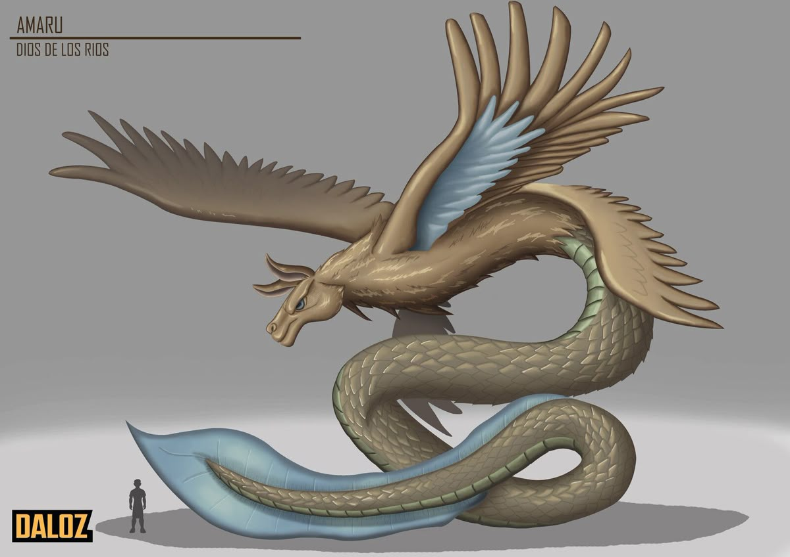
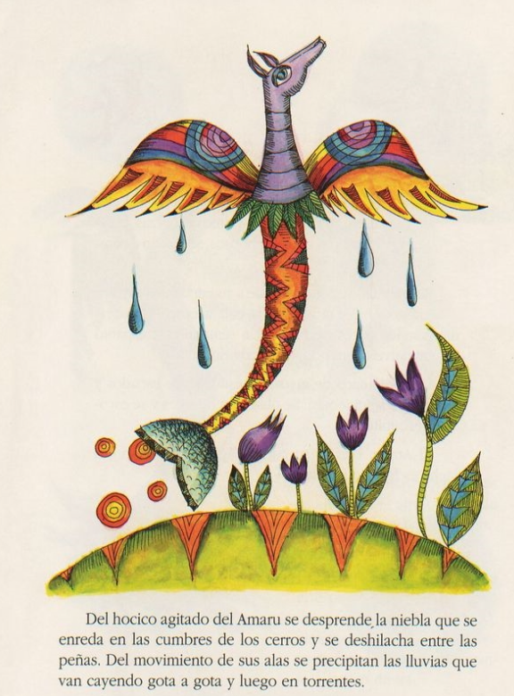

Hace muchos años, una sequía devastó las tierras de los quechuas. Las plantas y animales estaban al borde de la muerte, excepto una resistente planta de qantu, que empezó a secarse.
Sintiendo su vida desvanecerse, la planta concentró su energía en un último pimpollo, que, al amanecer, se transformó en un colibrí. Este valiente pájaro voló hacia el dios Waitapallana, quien, al percibir el aroma del qantu, se entristeció al ver la devastación. Lloró dos lágrimas que cayeron al lago Wacracocha.

| Enseñanza | Descripción |
|---|---|
| Valentía ante la adversidad | El colibrí enfrenta la sequía y se arriesga para pedir ayuda, mostrando que, a pesar de las dificultades, la valentía puede traer cambios. |
| Sacrificio por el bien común | La planta de qantu sacrifica su última fuerza para ayudar a la tierra, simbolizando el altruismo y el deber hacia los demás. |
| La importancia del agua | La sequía devastadora resalta la necesidad vital del agua y la conexión entre la naturaleza y la vida. |
| Interconexión de todos los seres | La historia muestra cómo cada ser, desde una pequeña flor hasta un poderoso dios, tiene un papel en el equilibrio del mundo. |
| Esperanza y renacimiento | La lluvia y el arco iris al final simbolizan el renacer y la esperanza, indicando que, tras tiempos difíciles, siempre puede llegar la renovación. |
| La naturaleza como un ente vivo | La respuesta del dios Waitapallana y la serpiente Amarú muestran que la naturaleza tiene su propia sensibilidad y puede responder a las acciones y sufrimientos de sus creaturas. |
| Cada una de estas enseñanzas refleja la profunda conexión entre los quechuas y su entorno, así como los valores que promueven en su cultura. | |